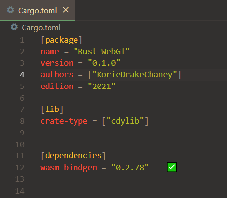

Introduction
This tutorial is free and open source, and all code uses the MIT license - so you are free to do whatever you want with this code :D
I really enjoy computer graphics, from the mathematically aspect and the results that you can create. The possibilities are limitless, you can make worlds, games, simulations, data visualizations, beautiful websites, anything. With the computer graphics world, I feel that there is one tutorial that stands above the rest. That tutorial is learnopengl.com. To continue the love and my love for Web Development / Rust, I will be recreating that tutorial, for users who want to learn WebGl but also want to use Rust as their language of choice. You'll also learn WebAssembly in general through this process.
Prerequisites
This tutorial is primarily about learning WebGl while using Rust. I will be hoping that you do have a basic understanding of Rust's syntax, as some of the code may confuse you if you have never used Rust before. What I will do, is describe the logic.
If you do not know anything about rust, I will direct you to these following tutorials...
Learning Rust
- The Rust Programming Language Book allows you to understand the basics.
- Learn Rust by Example more for references.
- Rust's Ownership Model for JavaScript Developers if you are coming from javascript, this could be helpful.
Boxes
Code
You will see fragments of code scattered around the book in dark-gray boxes like this#![allow(unused)] fn main() { println!("Hello World!"); }
Color hints
Some words are displayed with a different color to make it extra clear these words portray a special meaning:- Definition: green words specify a definition i.e. an important aspect/name of something you're likely to hear more often.
- Program structure: red words specify function names or class names.
- Variables: blue words specify variables including all WebGL constants
WebGl Function references
Functions will show up in a slightly noticeable underline with bolded and color, to link you to the documentation. Clicking on gl.clear_color(1.0, 0.0, 0.0, 1.0);Now that you got a bit of a feel of the structure of the site, hop over to the Getting Started section to start your journey in WebGL!
Copyright (C) 2022, Korie Chaney.
Chapter 1 : Setup
I would also like for you to use the same template which I am using, so we do not have any trouble.
cargo generate https://github.com/KorieDrakeChaney/Rust-Wasm-Web-Template.git
cd [name-of-your-choice]
cargo build && npm install
code ./

You'll have a public, src, and web directory.

You'll notice that there is already a crate-type and a dependency already loaded in. Here is one of our ways to talk to javascript, using wasm-bindgen. Taken from the repository:
Features
-
Lightweight. Only pay for what you use.
wasm-bindgenonly generates bindings and glue for the JavaScript imports you actually use and Rust functionality that you export. For example, importing and using thedocument.querySelectormethod doesn't causeNode.prototype.appendChildorwindow.alertto be included in the bindings as well. -
ECMAScript modules. Just import WebAssembly modules the same way you would import JavaScript modules. Future compatible with [WebAssembly modules and ECMAScript modules integration][wasm-es-modules].
-
Designed with the ["Web IDL bindings" proposal][webidl-bindings] in mind. Eventually, there won't be any JavaScript shims between Rust-generated wasm functions and native DOM methods. Because the wasm functions are statically type checked, some of those native methods' dynamic type checks should become unnecessary, promising to unlock even-faster-than-JavaScript DOM access.
const CopyPlugin = require("copy-webpack-plugin");
const path = require('path');
const WasmPackPlugin = require("@wasm-tool/wasm-pack-plugin");
module.exports = {
entry:
{
main : "./web/main.js",
},
output: {
path: path.join(__dirname, 'dist'),
filename: '[name].js',
},
mode: "development",
plugins: [
new CopyPlugin({
patterns: [
{ from: './public/index.html'},
],
}),
new WasmPackPlugin({
crateDirectory: path.resolve(__dirname, ".")
})
],
experiments : {
asyncWebAssembly : true
}
};
You do not have to know what's going on here, basically just compiling our code from our rust files into a javascript/wasm relationship.
The test
We should have these scripts in our json file
"scripts": {
"build": "node cleanup && webpack",
"server": "webpack-dev-server",
"refresh" : "npm run build && npm run server"
}
"build" : calls node cleanup, which cleans the dist folder, then calls webpack to bundle our code.
"server" : creates a webpack-dev-server.
"refresh" : calls build then creates a server.
in your terminal, with the folder open, type in the command
npm run refresh
You should have some new folders created, a dist folder, and a pkg folder.
The pkg folder will contain the files the wasm-pack generated and the dist will contain files generated by the bundler, webpack.
Open up the dev server that webpack created. You should be greeted with an alert:

Now that we have our environment ready, let's tackle on some WebGL with creating a window!
Copyright (C) 2022, Korie Chaney.
Chapter 1 : Hello Canvas
- window.fetch
- Node.prototype.appendChild
- WebGL
- WebAudio
Now for the readers who have spotted this, you may already know why we're using this. WebGL, is the Rendering API that allows us to create 3D/2D graphics. Without WebGL, we have nothing ;-;.
So for this chapter, we will be adding web-sys in our Cargo.toml file:
[package]
name = "~~~"
version = "~~~"
authors = "~~~"
edition = "~~~"
[lib]
crate-type = ["cdylib"]
[dependencies]
wasm-bindgen = "*"
[depencies.web-sys]
version = "*"
But that's not all, we do have to add some features from the crate manually. For this chapter, all we need access to:
- the Document to add reference elements
- the Canvas to write on
- Window to write on
- WebGL's API to render
So our crate should look like this:
[dependencies.web-sys]
version = "*"
features = [
'Document',
'HtmlCanvasElement',
'Window',
'WebGl2RenderingContext'
]
and in chapters to come, we will keep adding to this.
<body>
<canvas id="canvas"></canvas>
</body>
To add finishing touches, we can style the canvas element in our html file, so that is takes up the whole screen:
<style>
#canvas {
width : 100%;
height : 90vh;
}
</style>
You can even for fun change the < title > in the < head > section to whatever you want, have fun with this tutorial :).
<head>
<title>~~~</title>
</head>
From this point onwards, everything will be in rust
In our src directory, go into your lib.rs
we should see this :
use wasm_bindgen::prelude::*; #[wasm_bindgen] extern "C" { fn alert(s: &str); // imports alert function from javascript } #[wasm_bindgen(start)] // at the start pub fn main() { alert("Hello World!"); }
#![allow(unused)] fn main() { use wasm_bindgen::prelude::*; // imports wasm_bindgen crate }
anything after a #[wasm_bindgen] macro with a extern "C" brackets will be javascript imports :
#![allow(unused)] fn main() { #[wasm_bindgen] extern "C" { fn alert(s: &str); // imports alert function from javascript } }
#[wasm_bindgen(start)] // (start) means this function will be called at the start pub fn main() { alert("Hello World!"); }
use wasm_bindgen::prelude::*; #[wasm_bindgen(start)] pub fn main() { }
#![allow(unused)] fn main() { use wasm_bindgen::prelude::*; use web_sys::{WebGl2RenderingContext}; use wasm_bindgen::JsCast; // A trait for checked and unchecked casting between JS types. }
#[wasm_bindgen(start)] pub fn main() { let document = web_sys::window().unwrap().document().unwrap(); // get the document let canvas = document.get_element_by_id("canvas").unwrap(); // retrieves jsvalue to the canvas element let canvas: web_sys::HtmlCanvasElement = canvas.dyn_into::<web_sys::HtmlCanvasElement>().unwrap(); // gets the element itself }
After getting the document, we can get the canvas by doing a normal javascript function get_element_by_id("~~~~"), which the id we put for our canvas element was "canvas", then of course we unwrap.
Now what we retrieved was a JSvalue, and as the documentation says, doesn't live in rust, we would have to retrieve it's value, by using dyn_init::<~~~>, which then gives up the rust value of canvas. Next step is to get the WebGL2RenderingContext by :
#[wasm_bindgen(start)] pub fn main() { let gl = canvas.get_context("webgl2").unwrap().unwrap().dyn_into::<WebGl2RenderingContext>().unwrap(); }
Now if we refreshed now, there still wouldn't sign of anything. If everything worked, we should have the WebGL2RenderingContext, which allows us to use WebGL2's API, to show that we do have it, let's try a function, clear("~~~~"), and clear the color_buffer_bit to a color using the function clear_color("~~~~"), and set the RGBA values to the color red, a very noticable color.
#[wasm_bindgen(start)] pub fn main() { gl.clear_color(1.0, 0.0, 0.0, 1.0); gl.clear(WebGl2RenderingContext::COLOR_BUFFER_BIT); }
#[wasm_bindgen(start)] pub fn main() { use wasm_bindgen::prelude::*; use web_sys::{WebGl2RenderingContext}; use wasm_bindgen::JsCast; #[wasm_bindgen(start)] pub fn main() { let document = web_sys::window().unwrap().document().unwrap(); let canvas = document.get_element_by_id("canvas").unwrap(); let canvas: web_sys::HtmlCanvasElement = canvas.dyn_into::<web_sys::HtmlCanvasElement>().unwrap(); let gl = canvas.get_context("webgl2").unwrap().unwrap().dyn_into::<WebGl2RenderingContext>().unwrap(); gl.clear_color(1.0, 0.0, 0.0, 1.0); gl.clear(WebGl2RenderingContext::COLOR_BUFFER_BIT); } }
npm run refresh